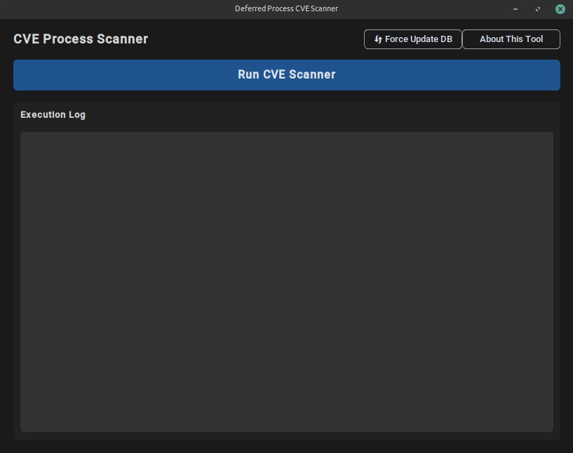
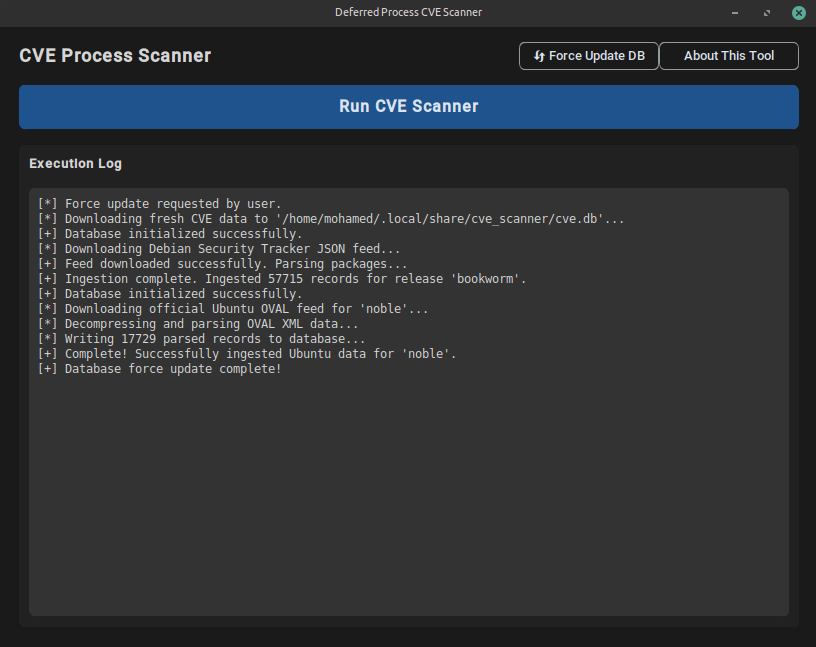
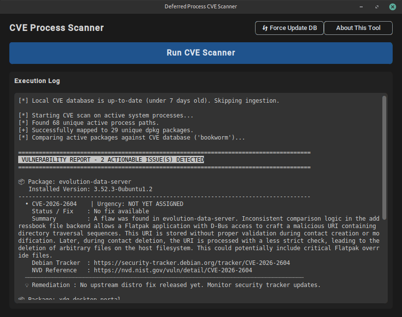
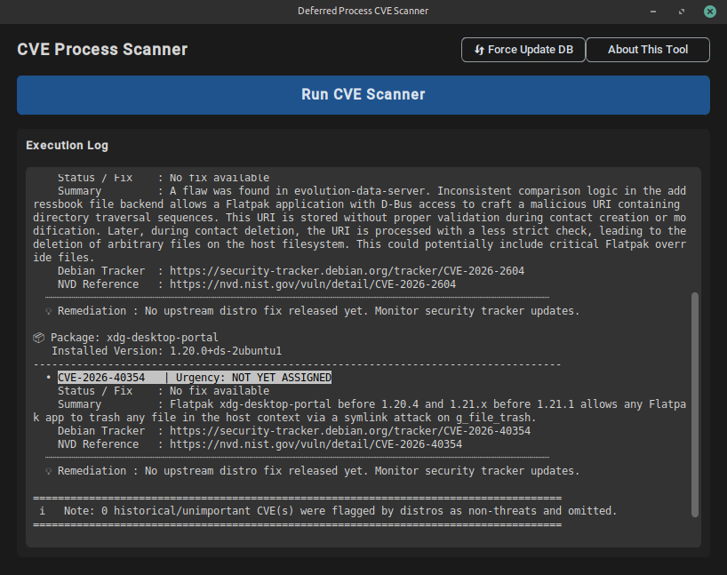
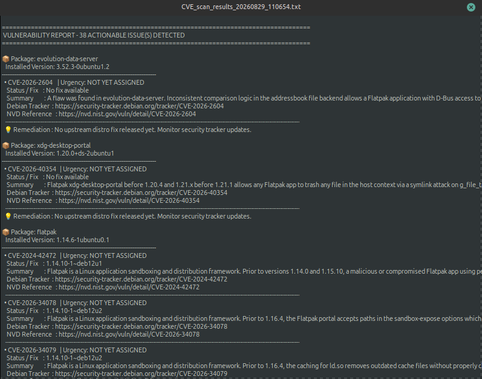

CVE scanner
A tool that maps running processes against CVE entries from repositories.
CybersecurityA tool that maps running processes against CVE entries from repositories.
CybersecurityCVE Process Scanner for Linux is a lightweight security audit tool designed to bridge the gap between static vulnerability databases and live system memory. Built natively for Linux environments (Debian/Ubuntu-based distributions such as Linux Mint), it monitors active system processes, checks running binaries against official vendor feeds, and delivers real-time vulnerability intelligence without heavy daemon overhead.
/proc filesystems and inspecting process memory maps
(/proc/[pid]/exe). It identifies unique, executed binaries currently running in
user-space and kernel-space to build a clean baseline of live system executables.
dpkg-query -S on Debian/Ubuntu systems), the scanner maps resolved binary file paths
directly back to their originating system packages and extracts exact upstream and deb-revision
version numbers.
notify-send and output actionable
remediation commands (such as targeted apt-get install --only-upgrade calls) directly to the
GUI console.
apt upgrade instructions).
notify-send, customizable themes,
and terminal stdout redirection directly inside the app GUI.
| Component | Technology |
|---|---|
| Language | Python 3.10+ |
| GUI Framework | CustomTkinter / Tkinter |
| Database | SQLite3 |
| Networking | Requests |
| Target OS | Linux (Debian / Ubuntu / Mint) |
~/.local/share/cve_scanner/cve.db
are queried for matching security advisories.




